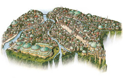

Theed - Capital City
Come and visit Naboo, the planet full of beautiful vast landscapes, extraordinary creatures, and a history rich of heritage!
Theed is the human capital city of planet Naboo and is home to the Theed Royal Palace. The city is known for it's harmonious architectural style and sophisticated culture.
Places to see while in Theed are: Palace Plaza, Main Boulevard, the Royal Academy, and the Royal House of Learning. For a relaxing break from the city you can stroll over to Theed University's library to read up on the history of the ancient city, or take a boat to Broadberry Meadow park! Metropolitan Theed is a great place to go shopping and has everything you could possibly need ranging from Galactic ceremonial robes, Queen Amidala dolls for the girls and repica droids, and miniature Qui-Gon Ginn action figurines for the young Jedi in training!
